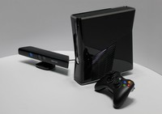
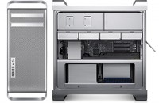
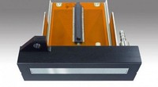
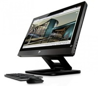
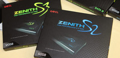
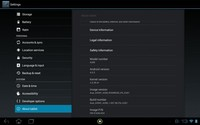
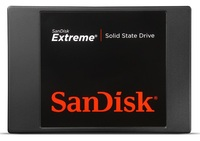
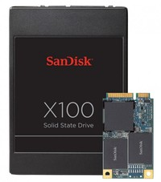
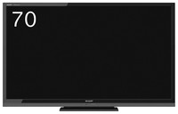
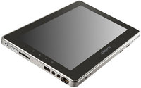

Alienware M18X R2 integrará la nueva Radeon HD 7970M
Wed, 15 Feb 2012 10:45:05 GMT
Un nuevo Alienware está por llegar, y si, como el resto de la familia de portátiles Alienware, es una maquina que tiene lo último y que está destinada a los que necesitan toda la potencia de un PC para gamers, en el tamaño de más o menos un portátil. El próximo Alienware M18X R2 será una actualización del Alienware M18X, llegará según las últimas filtraciones con con de los mejores procesadores de Intel Core i7 y como gran novedad, con la gráfica aun no anunciada Radeon HD 7970M o GeForce...
Un nuevo Alienware está por llegar, y si, como el resto de la familia de portátiles Alienware, es una maquina que tiene lo último y que está destinada a los que necesitan toda la potencia de un PC para gamers, en el tamaño de más o menos un portátil.
El próximo Alienware M18X R2 será una actualización del Alienware M18X, llegará según las últimas filtraciones con con de los mejores procesadores de Intel Core i7 y como gran novedad, con la gráfica aun no anunciada Radeon HD 7970M o GeForce GTX 675M. Todo bajo un portátil de 18 pulgadas y un grosor considerable. ¿Portátil? Si. ¿Portable? La verdad es que poco.
Además de estás gráficas, soportarían la posibilidad de hacer streaming de vídeo vía WiDi en alta definición, gracias a los procesadores de Intel que integran esta tecnología para mandar la señal de tu pantalla a una pantalla de alta definición sin necesidad de cables.
Microsoft busca la estrella que explotaría el 3D en la próxima Xbox
Wed, 15 Feb 2012 02:01:49 GMT
El que diga que no está, al menos, un poco emocionado por saber con qué nos podría sorprender Microsoft en la próxima generación de la Xbox, es porque Sony le tiene electrodos pegados al cerebro (o bien no es fan y listo). Pero de cualquier manera, los rumores entorno a la nueva generación de la consola de Microsoft no descansan y, se sea o no fan por ser devoto a otra plataforma, siempre hay curiosidad por saber qué se prepara en los laboratorios. En esta oportunidad no se trata de...

El que diga que no está, al menos, un poco emocionado por saber con qué nos podría sorprender Microsoft en la próxima generación de la Xbox, es porque Sony le tiene electrodos pegados al cerebro (o bien no es fan y listo). Pero de cualquier manera, los rumores entorno a la nueva generación de la consola de Microsoft no descansan y, se sea o no fan por ser devoto a otra plataforma, siempre hay curiosidad por saber qué se prepara en los laboratorios.
En esta oportunidad no se trata de los laboratorios pero sí del departamento de empleo en las oficinas de Redmond quienes estarían buscando la nueva estrella que pueda explotar el potencia de la tecnología 3D en la próxima consola, que muchos ya atendemos como Xbox 720. En las ofertas de empleo de Microsoft hay una vacante para un ingeniero “apasionado en algoritmos para el procesamiento de imágenes y tecnología de imágenes en 3D. Si bien no se detalla más de que quisiéramos, obviamente, las responsabilidades y cualidades de la persona que trabajaría en este puesto sería la de manejar la manipulación del contenido 3D.
Son pistas que nos dan y que quizás no les estemos prestando gran atención, pero considerando que Sony y Nintendo le apuestan -a su manera- a la tecnología 3D, Microsoft también lo estaría intentando. De hecho, parece lógico cuando los rumores apuntan a que llegaría con mayor potencia y mejor calidad de juegos, este último motivado también a la reproducción de Blu-ray.
Las expectativas sobre lo que se espera ver en la nueva consola de Microsoft son bastante grandes y llenas de ilusiones, lamentablemente aún estamos un poco lejos de ver de manera oficial lo nuevo en este tema.
Apple podría incorporar NVIDIA Kepler en su próximo… ¿Mac Pro?
Wed, 15 Feb 2012 00:02:24 GMT
Coincidiendo con la participación de Tim Cook, CEO de Apple en la conferencia sobre tecnología Goldman Sach, hoy se están dando a conocer más novedades de lo habitual acerca de la compañía y sus productos. La última, una nueva “filtración” de la que se hace eco Electronista, y que pondría la nueva generación de tarjetas gráficas de 28 nanómetros de NVIDIA en la próxima actualización de la familia de estaciones de trabajo Mac Pro. Y muchos os preguntareis, asombrados, o cuando menos confusos ¿Mac Pro no había sido cancelado? Lo...

Coincidiendo con la participación de Tim Cook, CEO de Apple en la conferencia sobre tecnología Goldman Sach, hoy se están dando a conocer más novedades de lo habitual acerca de la compañía y sus productos. La última, una nueva “filtración” de la que se hace eco Electronista, y que pondría la nueva generación de tarjetas gráficas de 28 nanómetros de NVIDIA en la próxima actualización de la familia de estaciones de trabajo Mac Pro.
Y muchos os preguntareis, asombrados, o cuando menos confusos ¿Mac Pro no había sido cancelado? Lo cierto es que en el último tramo de 2011 surgieron con insistencia una serie de rumores acerca de la cancelación de la línea Mac Pro de Apple, por causa de unos demasiado elevados costes de producción, que complementados por un nivel de ventas muy bajo hacían que la plataforma ya no generase beneficios. No obstante, siempre ha quedado un cierto eco de una posible actualización de estos ordenadores de alto rendimiento, con más en común con servidores de gran categoría que con equipos domésticos, y este “eco” se ha visto alimentado hoy por inusual movimiento en la industria, del que ha sido voz una fuente sin identificar. Apple parece estar descontenta con la actual generación de equipos con gráficos AMD, por causa de controladores inestables y fallos de hardware, aparentemente, y eso habría llevado a la compañía a volver a los brazos de NVIDIA, para retomar un idilio pasado.
Kepler ofrecería un mejor comportamiento, con una mayor velocidad especialmente para el público objetivo de este equipo, los profesionales de la edición de vídeo/audio/imagen, debido a que muchas herramientas profesionales están especialmente optimizadas para sacar el máximo partido a los núcleos CUDA, que prestan una ayuda suplementaria a la CPU del equipo cuando es necesario. Aprovechando el tirón, la misma fuente, que asegura que la actualización del declarado prematuramente difunto Mac Pro llegará durante el verano, unos dos años después de la última versión conocida, también comenta que Apple está recibiendo ya los primeros samples de los procesadores Intel Xeon basados en Ivy Bridge, que también formarían parte del nuevo modelo de estación de trabajo, con chips de 8 núcleos y 20MB de caché. Qué vueltas dan las cosas en Apple de la noche a la mañana.
Konica-Minolta presenta el primer cabezal de impresión OLED del mundo
Tue, 14 Feb 2012 22:19:54 GMT
Seguramente recordaréis que últimamente se están produciendo grandes avances en cuanto a los sistemas de fabricación de paneles OLED. El más impactante de ellos, es el de la impresión. No sólo por el hecho asombroso de que se pueda imprimir literalmente un panel OLED como si de una carta se tratase, sino también por el hecho de que ese método de fabricación supone una reducción de costes más que pronunciada con respecto al método tradicional. Los primeros pasos fueron dados por la firma Dupont, a la que siguió como no...

Seguramente recordaréis que últimamente se están produciendo grandes avances en cuanto a los sistemas de fabricación de paneles OLED. El más impactante de ellos, es el de la impresión. No sólo por el hecho asombroso de que se pueda imprimir literalmente un panel OLED como si de una carta se tratase, sino también por el hecho de que ese método de fabricación supone una reducción de costes más que pronunciada con respecto al método tradicional. Los primeros pasos fueron dados por la firma Dupont, a la que siguió como no podía se de otra forma, Samsung.
Pues bien, hoy acabamos de conocer otro nuevo hito: la presentación del primer cabezal de impresión OLED del mercado por parte del consorcio Konica-Minolta. Este nuevo equipamiento atiende al nombre de KM128SNG-MB y es capaz de “imprimir” puntos de tan sólo 1 picolitro de tamaño. Con un tamaño de 38mm de ancho, cuenta en su interior con nada menos que 128 “surtidores”, por lo que la densidad de impresión es más que suficiente.
Quizás avances como estos son los que justifiquen las recientes decisiones de las grandes corporaciones coreanas, que se han lanzado a la fabricación de televisores OLED de gran tamaño. Si hasta ahora, casi todo el mundo se echaba para atrás sólo con pensarlo, quizás estos nuevos métodos de fabricación han conseguido reducir tan sensiblemente los costes de producción que estemos ante una pequeña revolución en cuanto a la fabricación de televisores se refiere.
HP Z1, la estación de trabajo todo en uno por fin disponible
Tue, 14 Feb 2012 20:29:10 GMT
No es que yo la haya estado esperando para adquirirla porque luego de detallar las especificaciones sabemos que quizás no sea el equipo que realmente necesitamos para uso diario. Sin embargo, tras la espera de un año, quizás un poco más, HP por fin la hace oficial. La HP Z1 llega como un ordenador todo en uno destinado a ser la estación de trabajo para quienes demanda usos extremos, por lo tanto, entra en la categoría de las “estaciones de trabajo” y no un ordenador convencional con prestaciones estandar. Ahora...

No es que yo la haya estado esperando para adquirirla porque luego de detallar las especificaciones sabemos que quizás no sea el equipo que realmente necesitamos para uso diario. Sin embargo, tras la espera de un año, quizás un poco más, HP por fin la hace oficial. La HP Z1 llega como un ordenador todo en uno destinado a ser la estación de trabajo para quienes demanda usos extremos, por lo tanto, entra en la categoría de las “estaciones de trabajo” y no un ordenador convencional con prestaciones estandar.
Ahora bien, que venga en formato todo en uno ya nos hace olvidar cables y componentes que ocupan espacio innecesario, es un formato al que quizás no prestábamos mucha atención porque las prestaciones de estos equipos aún dejaban mucho que desear. La Z1 de HP integra características potentes combinadas con una pantalla de de 27 pulgadas que si las detallamos nos encontramos con: Gráficos profesionales NVIDIA Quadro, memoria ECC y procesadores Intel Xeon de cuatro núcleos.
Ya sea que se trate de un ingeniero creando componentes 3D, de un arquitecto diseñado edificios o de un productor de videos editando la grabación de un evento, la HP Z1 otorga a los profesionales creativos el poder que necesitan para dar vida a sus ideas en forma más rápida.
La pantalla cuenta con la tecnología IPS, lo cual le permite ofrecer resolución en alta definición ( 2560 × 1440 píxeles), altavoces y cámara web HD. Mientras que el almacenamiento, dependiendo de las necesidades o caprichos, podríamos elegir entre diferentes tipos de almacenamiento como SATA de 7.2K y 10K, SSD, configuraciones RAID opcionales, unidades extraíbles (AMO), lector de tarjetas de medios de varios formatos, y unidades ópticas Blu-ray.
Por otro lado, para quienes les gusta jugar con componentes para personalizar a gusto el hardware, HP la diseñó con la intención de que cada propietario pueda cambiar o hacer mantenimiento sin complicaciones, es decir, que se podría agregar un nuevo disco duro, cambiar la memoria o acceder a la tarjeta gráfica sin ningún tipo de herramineta.
El precio aún no es oficial, pero se espera que esté disponible en el mes de abril a partir de 1.899 dólares.
Más información: HP
GeIL llega al negocio de los SSD, presenta las series Zenith S2 y Zenith S3
Tue, 14 Feb 2012 18:04:30 GMT
Las unidades SSD se extienden cada vez más rápido por el mercado; en muy diversas capacidades y precios — siempre bastante abultados, eso sí — estos dispositivos de almacenamiento se caracterizan por rendimiento extremo, bajísimo consumo y ridículo peso. Estas grandes ventajas han hecho que muchas compañías dedicadas a negocios “paralelos”, también derivados de las memorias NAND, se interesen por el mundo de las unidades de almacenamiento sólido. La última en unirse a la fiesta es GeIL, reconocido fabricante de memoria DRAM que llega para competir con los Kingston, Corsair,...

Las unidades SSD se extienden cada vez más rápido por el mercado; en muy diversas capacidades y precios — siempre bastante abultados, eso sí — estos dispositivos de almacenamiento se caracterizan por rendimiento extremo, bajísimo consumo y ridículo peso. Estas grandes ventajas han hecho que muchas compañías dedicadas a negocios “paralelos”, también derivados de las memorias NAND, se interesen por el mundo de las unidades de almacenamiento sólido. La última en unirse a la fiesta es GeIL, reconocido fabricante de memoria DRAM que llega para competir con los Kingston, Corsair, Intel, y compañía en el mercado de los SSD con su nueva línea Zenith.
En dos categorías distintas, Zenith S2 y Zenith S3, las nuevas unidades de GeIL vendrán en versiones para todos los públicos. La serie Zenith S2 estará compuesta por unidades SSD de 60 y 120GB sobre interfaz Serial ATA II (3Gbps) con unas tasas de lectura y escritura bastante discretas, y propias de dispositivos ya “añejos”, con 280 y 270MB/s respectivamente, que si bien son bastante superiores a las de cualquier disco duro magnético se antojan insuficientes para los estándares actuales. Se espera que estas unidades de consumo sean relativamente económicas, al prescindir de una interfaz de transferencia más avanzada y contar con memorias más “básicas”. Por otra parte encontraremos la línea Zenith S3, compuesta por hasta cuatro versiones distintas, con capacidades de 60GB, 120GB, 240GB y 480GB en su modelo con mayor capacidad. En este caso no se han ofrecido detalles concretos, pero gracias a la conectividad Serial ATA III y las controladoras SSD SandForce, es espera que los dispositivos puedan alcanzar tasas de transferencia cercanas — o superiores — a los 500MB/s, acercándose al resto de SSDs de alto rendimiento del mercado. La capacidad de operaciones de entrada/salida por segundo de las unidades Zenith estará por encima de los 60.000 IOPS.
Según Hank Cheng, director de marketing de GeIL, las unidades se producen únicamente con las últimas controladoras SandForce, contando con la última versión de firmware (GOLDEN), que no es susceptible a los temidos fallos que han plagado unidades de múltiples marcas durante los últimos meses. GeIL mostrará públicamente sus primeras unidades SSD durante el CeBIT en Alemania, que comenzará en escasos 20 días
Ultrabooks entre un 20 y un 30% más baratos al entrar la primavera
Tue, 14 Feb 2012 16:04:52 GMT
Aunque se estima que los portátiles ultraligeros “registrados” bajo la marca de Intel, Ultrabook, no llegarán a su precio óptimo hasta el próximo año, parece que la actualización a la nueva plataforma Ivy Bridge del fabricante de procesadores traerá consigo jugosos beneficios económicos para los que estén dispuestos a quedarse “una generación por detrás”. Según informa DigiTimes, la serie de Ultrabooks actualmente en el mercado, con procesadores Sandy Bridge, verá una rebaja considerable en su precio de venta al público, de entre el 20 y el 30%, que se hará...
Aunque se estima que los portátiles ultraligeros “registrados” bajo la marca de Intel, Ultrabook, no llegarán a su precio óptimo hasta el próximo año, parece que la actualización a la nueva plataforma Ivy Bridge del fabricante de procesadores traerá consigo jugosos beneficios económicos para los que estén dispuestos a quedarse “una generación por detrás”. Según informa DigiTimes, la serie de Ultrabooks actualmente en el mercado, con procesadores Sandy Bridge, verá una rebaja considerable en su precio de venta al público, de entre el 20 y el 30%, que se hará efectiva entre los meses de marzo y abril, según llega la primavera.
Este recorte de precio tiene como motivo el activar la movilización del stock actual de las grandes marcas, para hacer hueco a los procesadores de nueva generación de Intel, que serán anunciados en el mismo mes de abril, y podrían causar un importante impacto negativo en las unidades que en estos momentos recogen polvo en las estanterías de las tiendas, todo esto de acuerdo con los análisis ofrecidos por fuentes muy cercanas a la cadena comercial. No obstante el cambio de plataforma afectará a más ordenadores fuera de la categoría creada por Intel; los ordenadores portátiles y sobremesa convencionales que montan procesadores Core i5 y Core i7 serie 2000, y con precios entre los 750 y 950 dólares, también serán rebajados de manera casi inmediata.
La rebaja parece fundamental para evitar pérdidas millonarias a compañías como Acer o Asus, cuyos Ultrabook de serie Sandy Bridge llevan ya unos meses en el mercado y están sufriendo ese temido “efecto actualizacíon”, que hace que los consumidores más informados opten por esperar a nuevas generaciones del producto antes de invertir un dinero muy valioso. Como ejemplo tenemos el producto estrella de Acer, Aspire S3, que ha pasado de un precio en ocasiones superior a los 800€ para el modelo básico, a encontrarlo por casi 100 Euros menos desde muchos retailers online y tiendas físicas. HP también ha tenido que forzarse a sí misma a reducir los $899 de su recién estrenado Folio 13 en algunas regiones. La llegada de Ivy Bridge condenará al ostracismo a cualquier dispositivo anterior que no haya sido rebajado drásticamente, generando pérdidas cuantiosas a los fabricantes, de modo que es de esperar que si no todos, al menos la mayoría decidan adoptar el recorte antes de que las nuevas CPUs lleguen, antes de verano, abriendo un nuevo mercado para este tipo de ordenadores.
Acer Iconia Tab A200 ya tiene Android Ice Cream Sandwich
Tue, 14 Feb 2012 03:01:46 GMT
De manera silenciosa, a pesar de que ya se filtró en una oportunidad la primera versión, Acer comenzó a poner a disposición delos usuarios de una Iconia Tab A200, su respectiva actualización a Android Ice Cream Sandwich. Como lo dejan saber usuarios del foro de la empresa, la actualización comenzó a aparecerles hace unas horas, por lo que quienes posean este modelo pueden correr y verificar el apartados de actualización de software en su tableta. Además de haber sido una de las últimas tabletas en portar un procesador (NVIDIA Tegra...

De manera silenciosa, a pesar de que ya se filtró en una oportunidad la primera versión, Acer comenzó a poner a disposición delos usuarios de una Iconia Tab A200, su respectiva actualización a Android Ice Cream Sandwich. Como lo dejan saber usuarios del foro de la empresa, la actualización comenzó a aparecerles hace unas horas, por lo que quienes posean este modelo pueden correr y verificar el apartados de actualización de software en su tableta.
Además de haber sido una de las últimas tabletas en portar un procesador (NVIDIA Tegra 2) de doble núcleo cuando se lanzó, ahora se convierte en una de las primeras en portar la última actualización de Android. Si bien no llegó a estar entre las primeras, y si los rumores son ciertos un nuevo modelo podría estar cerca, el pasar de Honeycomb a Ice Cream Sandwcih no debe molestar a nadie. No se menciona por ningún lado que la actualización este modificada por Acer como se espera sucede con la Iconia A500, pero no podemos asegurar nada hasta que tengamos información oficial de algún usuario que haya realizado la actualización.
Sobre las especificaciones de la Iconia A200 podemos destacar una pantalla táctil capacitiva de 10,1 pulgadas con resolución WXGA de 1200x800 píxeles, 1GB de memoria RAM DDR2 y almacenamiento es de 16 GB o 8 GB. Pocos han cumplido su promesa de actualización, pero por lo menos Acer junto con Motorola y la Xoom Wi-Fi, al igual que ASUS lo han hecho. Se seguirá extrañando Ice Cream Sandwich en la mayoría de los equipos, pero con la presión que se viene en el entorno móvil durante este mes de febrero es inevitable que las fichas se comiencen a mover.
iCade 8-Bitty, el mando retro para tu iPad
Tue, 14 Feb 2012 01:01:36 GMT
Si eres un amante de los equipos Retro, entonces no puedes dejar pasar el último accesorio para equipos portátiles que nos llega desde ThinkGeek. Compatible con equipos iPad, iPhone e incluso Android, el nuevo iCade 8 Bitty, te permitirá jugar a tus juegos retro preferidos con un práctico mando a distancia que rememora a los pads de la era de los 8Bits a la perfección. Con un diseño prácticamente idéntico al de los antiguos pad´s de las consolas NES, se conectará a vuestro equipo portátil a través de una conexión...
Si eres un amante de los equipos Retro, entonces no puedes dejar pasar el último accesorio para equipos portátiles que nos llega desde ThinkGeek. Compatible con equipos iPad, iPhone e incluso Android, el nuevo iCade 8 Bitty, te permitirá jugar a tus juegos retro preferidos con un práctico mando a distancia que rememora a los pads de la era de los 8Bits a la perfección.
Con un diseño prácticamente idéntico al de los antiguos pad´s de las consolas NES, se conectará a vuestro equipo portátil a través de una conexión Bluetooth, para lo que necesitará un par de pilas AA. Con cruceta tipo Nintendo de las de toda la vida y nada menos que 8 botones con los que darle fuerte a tus enemigos (2 pares de botoneras frontales, 2 laterales y hasta botones dedicados para “Star” y “Select”), cuando cojas este iCAde 8 Bitty te sentirás como tus años mozos, pese a echar la partidita de turno en una tablet de ultimísima generación.
Por el momento no hay fechas concreta para la puesta a la venta de este equipo, pero desde ThinkGeek confirman que estará disponible este mismo año, con un precio de venta de $25 (unos 20€ al cambio). Poca, cosa si tenemos en cuenta que gracias a él podrás volver a rememorar los mejores momentos de tus mejores años…
Panasonic 102P: el móvil con el que podrás ver películas Blu-ray
Mon, 13 Feb 2012 23:16:26 GMT
Interesante el último móvil que acaba de aparecer en el catálogo de la japonesa Softbank. No sólo por diseño y prestaciones multimedia, sino por que con este Panasonic 102P estamos ante un móvil todoterreno que podrás llevar incluso en las peores circunstancias meteorológicas. Y es que el Panasonic 102P esconde en su interior todo el poderío de un procesador Dual Core capaz de mover a la perfección una instalación de Android Gingerbread sin el menor resquicio de enlentecimiento. Para ello integra un procesador Texas Instuments OMAP 4430 a 1Ghz, 1...
Interesante el último móvil que acaba de aparecer en el catálogo de la japonesa Softbank. No sólo por diseño y prestaciones multimedia, sino por que con este Panasonic 102P estamos ante un móvil todoterreno que podrás llevar incluso en las peores circunstancias meteorológicas. Y es que el Panasonic 102P esconde en su interior todo el poderío de un procesador Dual Core capaz de mover a la perfección una instalación de Android Gingerbread sin el menor resquicio de enlentecimiento. Para ello integra un procesador Texas Instuments OMAP 4430 a 1Ghz, 1 Gb de RAM y 16 GB de memoria interna.
Pero quizás lo que más llame la atención son sus 7.8 mm de grosor, su impresionante diseño y sobre todo sus capacidades multimedia. Para ello cuenta con una pantalla de 4.3 pulgadas y 960x540 pixels de resolución; así como una cámara basada en un sensor CMOS retroiluminado de 8.2 Mpx. Todo ello aderezado con, WiFi, Bluetooth 2.1, GPS, brújula y sobre todo, la capacidad de conectarlo inalámbricamente a un reproductor o grabador Blu-ray y ver tus películas y series preferidas en cualquier lugar.
Para los “manazas” interesa destacar que estamos ante un equipo con soporte para salpicaduras y polvo, por lo que lo lleves donde lo lleves, resistirá como un campeón. Esperemos poder verlo pronto por territorio europeo y que no sólo los japoneses puedan disfrutar de este interesante terminal
Características
- Móvil Dual Core a 1GB
- Basado en Android Gingerbread
- Pantalla de 4.3 pulgadas
- Cámara retroilumina de 8.2 Mpx
- GPS
- Bluetooth 2.1
- Brújula
- Wi-Fi
- Conectividad con reproductores Blu-ray
Cámaras digitales: ¿Desaparecerán gracias a los smartphones?
Mon, 13 Feb 2012 21:03:21 GMT
En un mundo en el que la tecnología avanza de una manera voraz muchos dispositivos empiezan a desaparecer. No de un día para el otro, claro está, pero sus ventas empiezan a bajar de manera notable sus ventas, muchas compañías dejan de fabricar X o Y dispositivo y solo quedan dando vuelta grandes competidores que vienen en el mercado hace décadas y ya tienen una base de clientes que acuden siempre a ellos. Hace unos pocos años los teléfonos celulares eran dispositivos feos, sin estética y que solo los tenían...
En un mundo en el que la tecnología avanza de una manera voraz muchos dispositivos empiezan a desaparecer. No de un día para el otro, claro está, pero sus ventas empiezan a bajar de manera notable sus ventas, muchas compañías dejan de fabricar X o Y dispositivo y solo quedan dando vuelta grandes competidores que vienen en el mercado hace décadas y ya tienen una base de clientes que acuden siempre a ellos.
Hace unos pocos años los teléfonos celulares eran dispositivos feos, sin estética y que solo los tenían personas con grandes ingresos económicos. Con el tiempo empezaron a aparecer algunos mucho más asequibles que hicieron que esta tecnología se metiera en la sociedad y, hoy, prácticamente todos tienen uno -incluso algunos más de uno-. Con esa evolución se pasó de los viejos teléfonos con el Nokia 1100 a la cabeza como insignia de otra generación a el iPhone como insignia de la otra. De los comunes celulares a los teléfonos inteligentes a través de los que se puede realizar las tareas básicas de un ordenador de escritorio. Con la llegada de los smartphones llegaron las cámaras digitales en teléfonos y, gracias a que la tecnología continúa avanzando y los sensores pueden cada vez ocupar menos lugar, la calidad es cada vez mejor.
Lógicamente, esos sensores (por ahora al menos), no se pueden comparar con cámaras profesionales que son utilizadas por fotógrafos pero sí se pueden comparar con las cámaras digitales de apunta y dispara. Hoy se pueden ver imágenes capturadas con el iPhone 4S con una resolución y una calidad que antes sólo se podía obtener a través de una cámara digital. Hoy esa cámara está en nuestro bolsillo y permite, además, hablar por teléfono.
¿Desaparecerá por completo? No tengo la bola mágica, pero lo que sucede en estos casos es que desaparecen muchas marcas que dejan de ganar dinero por no producir dispositivos que hagan la diferencia y que la gente realmente quiera y se mantienen otras que ya tienen un nombre y sus gadgets se venden solos. Los beneficios de comprar una cámara digital compacta anteriormente eran notables. Se había dejado de necesitar rollo, no había que revelar las películas y se podían tomar cientos de capturas. Hoy todo eso se puede hacer con un teléfono que, además, no molesta a la hora de transportar y, también, permite hacer muchísimas otras cosas -desde revisar mails hasta jugar a juegos de avanzada tecnología-. Todo esto sin contar que con los smartphones estamos todo el tiempo conectados a la red y no tenemos que andar bajándolas todo el tiempo. Simplemente la enviamos a nuestro mail, red social o donde queramos y problema terminado.
Un claro ejemplo de lo que digo más arriba es Kodak. Todos conocemos a Kodak como una de las empresas de cámaras más famosas del mundo. De hecho muchas de las viejas a rollo que hay perdidas en los cajones en desuso hace años son de esa compañía. Hace cuestión de días -el 9 de este mes para ser exacto- la empresa anunció que dejaría de producir cámaras digitales, entre otras cosas, para dedicarse solamente en productos para impresión de fotografía e impresoras de inyección de tinta.
Después de los teléfonos inteligentes llegaron las tabletas que, si bien todavía no hay ninguna que se destaque por tomar fotografías con buenísima calidad, pensar que no aparecerán es simplemente no querer ver el futuro. Es lógico que se lanzará un modelo que capture igual que una cámara compacta o mejor y, al menos por lo que demuestran los números, las tablets llegaron para quedarse.
Un estudio realizado por la gente de IHS iSuppli predijo a fines del 2011 que los smartphones seguirán teniendo una tasa anual de crecimiento de un 28,5% hasta el año 2015. Por otra parte, el mercado de las tablets tendrá una tasa anual de crecimiento del 72,1% hasta el año 2015, 2,5 veces más rápido que el de los smartphones.
No es extraño que por este motivo en Flickr la cámara más usada sea la del iPhone 4. La cámara más importante en la red social de fotografías más importante de todo el mundo es la de un teléfono inteligente. No es un dato menor. Este dato puede ser chequeado por cualquiera en cualquier momento.
¿Cuándo? Nadie sabe con exactitud, pero a medida que los teléfonos inteligentes vayan evolucionando, las cámaras compactas comenzarán a desaparecer. Este proceso ya comenzó y se impulsará todavía más.
La televisión Super OLED de 55 pulgadas de Samsung confirmada para primavera
Mon, 13 Feb 2012 19:08:54 GMT
Samsung puede haberle ganado la partida a LG por la mano al anunciar su televisión OLED de 55 pulgadas para esta primavera en Europa, mientras que el modelo de la competencia no llegaría hasta el tramo final del año. La pantalla, que debutó durante el CES de Las Vegas, la más grande de su categoría cuando llegue al mercado, e incorporará no solo el impresionante panel Super OLED de la compañía (con mucha experiencia previa con la tecnología, utilizada en múltiples ocasiones en sus smartphones, en su versión de matriz...
Samsung puede haberle ganado la partida a LG por la mano al anunciar su televisión OLED de 55 pulgadas para esta primavera en Europa, mientras que el modelo de la competencia no llegaría hasta el tramo final del año. La pantalla, que debutó durante el CES de Las Vegas, la más grande de su categoría cuando llegue al mercado, e incorporará no solo el impresionante panel Super OLED de la compañía (con mucha experiencia previa con la tecnología, utilizada en múltiples ocasiones en sus smartphones, en su versión de matriz activa) sino también un procesador de doble núcleo para manejar los formatos más exigentes, y soporte 3D completo a través de gafas de obturación activa.
La tecnología OLED ofrece unos tiempos de respuesta mucho más rápidos que los de los paneles LCD tradicionales y un consumo muy inferior, junto a una calidad de imagen excepcional, con un nivel de detalle muy superior. La televisión integrará el ecosistema Smart TV habitual de la firma, con acceso a todo tipo de servicios tanto locales como a través de internet, e incorpora reconocimiento de voz así como interfaz de interacción mediante gestos, capturando nuestros movimientos a través de su webcam.
Este tipo de tecnología sigue teniendo unos costes de producción realmente altos, de modo que Samsung tanteará primero el mercado con un número bastante limitado de unidades esta primavera, siguiendo con una remesa más generosa para finales de año, momento en que se encontrará con la competencia en plena fase de distribución. Samsung no ha anunciado públicamente el precio de su primer panel OLED de 55 pulgadas, pero se espera que ronde los 6.000 Euros al momento de llegar a las tiendas.
Foto: Chip Chick
Sony trabaja en un port del Vita OS para smartphones y tablets
Mon, 13 Feb 2012 17:03:52 GMT
Sony está en llamas y ahora el que será el nuevo CEO y presidente de la compañía, llamado Kazuo Hirai, dijo una pista más que interesante en relación al movimiento que planea hacer la empresa. Según comentó la empresa está estudiando el sistema operativo de la PS Vita para exportarlo a smartphones y tablets. Esto lo reveló Hirai en una conferencia donde comentó que la gente no tiene que tomar el Vita OS como un sistema operativo sólo para una plataforma de videojuegos sino también como uno exclusivamente móvil. Lógico...

Sony está en llamas y ahora el que será el nuevo CEO y presidente de la compañía, llamado Kazuo Hirai, dijo una pista más que interesante en relación al movimiento que planea hacer la empresa. Según comentó la empresa está estudiando el sistema operativo de la PS Vita para exportarlo a smartphones y tablets.
Esto lo reveló Hirai en una conferencia donde comentó que la gente no tiene que tomar el Vita OS como un sistema operativo sólo para una plataforma de videojuegos sino también como uno exclusivamente móvil. Lógico que todavía no se reveló si planean usarlo en o no. Lo que sí está claro es que la empresa, al menos, lo tiene en mente. Depende obviamente de los resultados del port.
¿Por qué? Porque no solo iOS está acaparando el mercado, sino también Android. Esto está haciendo que la empresa no vea un aumento en las ganancias (de hecho perdieron US$325 millones) durante el 2011 si se lo compara con el 2010. Si bien la empresa tiene dispositivos con Android, no es lo mismo ser completamente dueño del dispositivo que utilicen tus gadgets.
SSD de Sandisk X100 y Extreme ya son oficiales y quieren su porción de mercado
Wed, 15 Feb 2012 03:02:22 GMT
SanDisk X100 SSD y SanDisk Extreme SSD son las nuevas apuestas de la empresa para competir en el mercado de discos de estado sólido que aún esperamos se popularicen para y así comenzar a bajar los precios. Sandisk quiere competir con la oferte actual de empresa de su categoría, por lo que han arriesgo a ofrecer buenas prestaciones por menor precio. Por un lado tenemos al X100 SSD, no es el más potente ni ofrece la mayor capacidad de almacenamiento en comparación a la versión “Extreme”, pero no deja de...

SanDisk X100 SSD y SanDisk Extreme SSD son las nuevas apuestas de la empresa para competir en el mercado de discos de estado sólido que aún esperamos se popularicen para y así comenzar a bajar los precios. Sandisk quiere competir con la oferte actual de empresa de su categoría, por lo que han arriesgo a ofrecer buenas prestaciones por menor precio.
Por un lado tenemos al X100 SSD, no es el más potente ni ofrece la mayor capacidad de almacenamiento en comparación a la versión “Extreme”, pero no deja de ser interesante al ser capaz de ofrecer 500MB/s de lectura y 420MB/s de escritura estando destinado a ser implementado tanto en ultrabooks como en ordenadores de escritorio por tener un margen de grosor entre 7mm y 9mm dependiendo de la capacidad de almacenamiento. Su disponibilidad comienza en unidades de 32GB y termina en un precio de 512GB.
Por otro lado, la versión heavy viene siendo el Extreme SSD que si bien está destinado a captar la atención de gamers y profesionales, la ventaja sobre los precios de modelos con prestaciones similares, hace que sea realmente tentativo. El Extreme SSD es capaz de ofrecer transferencia secuencial de 550MB/s y 520MB/s de lectura y escritura, respectivamente con el mismo método aleatorio de escritura 4K a 83.000/44.000 IOPS.
El Sandisk SSD Extreme está disponible a partir de hoy para cualquier interesado en adquirirlo en capacidad de 120GB y 240GB por un precio $189,99 y $399,99, respectivamente, un modelo de 480GB estará disponible antes de que finalice el 2012 con un precio bastante tentativo de 749,99 dólares. Sobre el Sandisk SSD X100, sólo estará disponible para fabricantes, lo cual sería una estrategia interesante para implementarlos por un buen precio en futuros ordenadores.

Sharp LC-70Q7, el último televisor de la familia Quattron
Wed, 15 Feb 2012 01:04:14 GMT
Si estás interesado en renovar televisor, puede que te interese el último equipo que acaba de presentar la casa Sharp en territorio japonés. Integrado dentro de los denominados equipos Quattron (aquellos televisores que además de los colores “primarios” rojo, verde y azul, incluyen un amarillo adicional) el nuevo Sharp LC-70Q7 se podría considerar un equipo de entrada dentro de dicha gama. Con un tamaño nada despreciable, nada menos que 70 pulgadas, este LC-70Q7 incorpora un nuevo panel UV2A con resolución Full HD y 1920 × 1080 pixels de resolución. Equipado...

Si estás interesado en renovar televisor, puede que te interese el último equipo que acaba de presentar la casa Sharp en territorio japonés. Integrado dentro de los denominados equipos Quattron (aquellos televisores que además de los colores “primarios” rojo, verde y azul, incluyen un amarillo adicional) el nuevo Sharp LC-70Q7 se podría considerar un equipo de entrada dentro de dicha gama.
Con un tamaño nada despreciable, nada menos que 70 pulgadas, este LC-70Q7 incorpora un nuevo panel UV2A con resolución Full HD y 1920 × 1080 pixels de resolución. Equipado con retroiluminación LED, incluye las últimas tecnologías del momento, destacando como no, por su conectividad a Internet y dado su gran tamaño, podrás navegar por Internet al mismo tiempo que ves tu partido favorito, en una pantalla dividida a la mitad.
Como comentábamos antes, estamos ante un equipo básico, por lo que tampoco es que incorpore muchos extras, aunque algunos sí que son llamativos, como son su doble sintonizador digital, su función PVR que nos permitirá grabar nuestros programas preferidos de la televisión a través de su puerto USB y como no, el soporte DLNA para reproducir contenido en red. Eso sí, será básico, pero de barato nada: saldrá a la venta el próximo mes de marzo por unos 5.300€ al cambio. Si, un poquito caro, pero es que estamos hablando de un equipo de nada más y nada menos que 70 pulgadas de diagonal, necesitarás un buen salón para poder disfrutar de él sin quedarte bizco en el intento…
MT-50 y MT-60D, los nuevos sistemas de sonido 5.1 de Bowers & Wilkins
Tue, 14 Feb 2012 23:04:05 GMT
Los amantes del sonido de calidad, seguro que recibirán como agua de mayo los últimos sistemas de altavoces recién presentados por la afamada casa Bowers & Wilkins. Dos han sido los nuevos sistemas 5.1 anunciados, el MT-50 y el MT-60D, que convenientemente complementados entre sí, conseguirán un sistema de sonido Home Theater que seguramente se convertirá en objeto de deseo. Con respecto al MT-50, decir que saldrá a un precio de unos 1320€, y estará compuesto por 5 satélites modelo M1 (con electrónica renovada y nuevos altavoces para agudos y...
Los amantes del sonido de calidad, seguro que recibirán como agua de mayo los últimos sistemas de altavoces recién presentados por la afamada casa Bowers & Wilkins. Dos han sido los nuevos sistemas 5.1 anunciados, el MT-50 y el MT-60D, que convenientemente complementados entre sí, conseguirán un sistema de sonido Home Theater que seguramente se convertirá en objeto de deseo.
Con respecto al MT-50, decir que saldrá a un precio de unos 1320€, y estará compuesto por 5 satélites modelo M1 (con electrónica renovada y nuevos altavoces para agudos y medios) a los que acompañará un subwoofer modelo ASW608 , capaz de llegar a una potencia máxima de unos nada desdeñables 200W.
Por su parte, el MT-60D, saldrá a la venta con un precio de partida cercano a los 2300€, por lo que sólo estará al alcance de los bolsillos más holgados (ya sabéis que con esto de las crisis, el lujo está de moda). Como en el caso anterior, se incluyen los satélites M1, pero con este equipo se introduce un nuevo subwwofer: el PV1D : un sistema de gama alta, que incluye pantalla OLED initegrada, siendo capaz de alcanzar la nada despreciable cifra de 400W. Indicar por último, que los precios de cada satélite M1, serán de 180€ por unidad. Vamos, para los amantes del sonido de calidad.
Remove: Aplicación fotográfica permite eliminar objetos molestos
Tue, 14 Feb 2012 21:03:53 GMT
La compañía de fotografía Scalado lanzó una aplicación para teléfonos móviles que no entiendo cómo es que alguien no la presentó antes. Se trata de Remove que, como su nombre lo indica, es capaz de remover cosas de la captura. ¿Cómo funciona? Si bien es la primera en hacer esto no es nada del otro mundo. Como bien explican desde la compañía, lo que hace la cámara es capturar varios frames a la hora de sacar una fotografía y, después, si hay algo que se interpuso en la captura al...
La compañía de fotografía Scalado lanzó una aplicación para teléfonos móviles que no entiendo cómo es que alguien no la presentó antes. Se trata de Remove que, como su nombre lo indica, es capaz de remover cosas de la captura. ¿Cómo funciona? Si bien es la primera en hacer esto no es nada del otro mundo. Como bien explican desde la compañía, lo que hace la cámara es capturar varios frames a la hora de sacar una fotografía y, después, si hay algo que se interpuso en la captura al momento de presionar el botón se puede eliminar y otro frame ocupará ese lugar.
Pero como si esto fuera poco, también se puede configurar para que Remove funcione automáticamente y borre los objetos que, según la aplicación, estén molestando. También se puede utilizar de manera manual como se puede observar en el video, lógicamente. Eso sí, para poder tomar fotografías de manera correcta las personas u objetos, no se tendrán que mover sino será inservible.
Cada vez aparecen más y más aplicaciones y dispositivos relacionados a la fotografía que le permiten al usuario común y corriente hacer cosas que antes sólo podían hacer profesionales (en este caso de la edición). La Lytro es una cámara sorprendente mientras que Remove una aplicación sorprendente.
Macbook Air modificado reemplazará al Macbook de policarbonato en el sector educativo
Tue, 14 Feb 2012 19:09:23 GMT
Tras descatalogar y hacer desaparecer el Macbook blanco primero de la tienda para particulares y ahora de la tienda para el sector educativo, Apple ha vuelto a incluir un ordenador portátil “básico” en su catálogo para estudiantes y personal docente. Pero no es que el equipo con carcasa de policarbonato se haya puesto a la venta de nuevo; para renovar la alternativa “económica” la firma ha decidido recurrir a su amigo más ligero, el Macbook Air a fin de conseguir congraciarse con sus compradores potenciales. En conreto, la nueva incorporación...
Tras descatalogar y hacer desaparecer el Macbook blanco primero de la tienda para particulares y ahora de la tienda para el sector educativo, Apple ha vuelto a incluir un ordenador portátil “básico” en su catálogo para estudiantes y personal docente. Pero no es que el equipo con carcasa de policarbonato se haya puesto a la venta de nuevo; para renovar la alternativa “económica” la firma ha decidido recurrir a su amigo más ligero, el Macbook Air a fin de conseguir congraciarse con sus compradores potenciales.
En conreto, la nueva incorporación al catálogo educativo será el modelo Macbook Air de 13 pulgadas, que actualmente está disponible por 1.175€/$1.149, aunque ligeramente modificado para lograr alcanzar un precio algo más económico. Este nuevo Macbook Air modificado se podrá adquirir a un precio reducido de US$999, igual que su extinto primo de color blanco, y apenas unas decenas de dólares por encima del modelo de 11 pulgadas que actualmente se encuentra en el store americano para educación. ¿La pega? A pesar de estar integrado en el chasis de mayor tamaño de la familia Air e incorporar una pantalla de 13 pulgadas, las especificaciones de este nuevo Macbook “Edu” corresponden a la versión más básica de 11 pulgadas, lo que significa que encontraremos un procesador Core i5 ULV a 1.6Ghz con gráficos integrados Intel HD 3000, 2GB de memoria RAM DDR3 y unidad SSD de 64GB. Aunque podría parecer un claro paso atrás, hay que destacar el rendimiento de estas CPUs de bajo consumo, que junto a la unidad SSD son capaces de ofrecer una más que satisfactoria experiencia, complementada por la gran autonomía (entre 5 y 7 horas) de este portátil.
Esta podría ser otra prueba de los supuestos planes de la compañía de renovar su gama de portátiles acercándolos en estética y características a su línea de ordenadores ultraportátiles, teoría que se veía reforzada hace unos días por las declaraciones de gente cercana al roadmap de Apple, que aseguraban una nueva generación de Macbook Pro con el mismo corte de perfil bajo de la línea Air, sin unidad óptica y procesadores ULV Ivy Bridge.
Altavoz para el iPad que aumentará 5 veces su sonido
Tue, 14 Feb 2012 17:01:33 GMT
Si hay algo que vale la pena es recorrer Kickstarter para ver los productos que están juntando dinero para ser desarrollados. Muchas veces se encuentran cosas más que interesantes. Uno de esos proyectos es el altavoz llamado Zooka Bluetooth que mejorará 5 veces el volumen de audio del iPad. El dispositivo es una barra que tiene altavoces en los costados y, además, funcionará como dock ya que lo levantará un poco permitiéndote que, por ejemplo, puedas escribir de una manera más cómoda. Esto fue creado para aquellos que lo usan...
Si hay algo que vale la pena es recorrer Kickstarter para ver los productos que están juntando dinero para ser desarrollados. Muchas veces se encuentran cosas más que interesantes. Uno de esos proyectos es el altavoz llamado Zooka Bluetooth que mejorará 5 veces el volumen de audio del iPad.
El dispositivo es una barra que tiene altavoces en los costados y, además, funcionará como dock ya que lo levantará un poco permitiéndote que, por ejemplo, puedas escribir de una manera más cómoda. Esto fue creado para aquellos que lo usan para ver series, películas o ver canales de TV a través de *streaming * y no les alcanza con el volumen que viene de fábrica.
El dispositivo se puede ordenar por US$89 pero lamentablemente no lo entregarán hasta, aproximadamente, el 12 de agosto. Deben juntar US$25.000 pero ya están en los US$20.000 (al momento de escribir la nota), así que no habrá problema y llegará muy pronto.
¿Está Apple probando un iPad de 8 pulgadas?
Tue, 14 Feb 2012 15:02:02 GMT
No solemos publicar muchos rumores cuando se empieza a hablar del lanzamiento de un potencial dispositivo de Apple porque en ese momento aparece muchísima información falsa y, al no poder comprobarse, decidimos pasar. Pero esta vez hicimos una excepción porque los que publican la información es nada menos que el Wall Street Journal que, como sabemos, tienen unas fuentes más que confiables (aunque de ahí a confirmarlo por completo hay un paso gigante). En esta oportunidad desde el periódico estadounidense aseguran que el nuevo iPad de Apple (o al menos...
No solemos publicar muchos rumores cuando se empieza a hablar del lanzamiento de un potencial dispositivo de Apple porque en ese momento aparece muchísima información falsa y, al no poder comprobarse, decidimos pasar. Pero esta vez hicimos una excepción porque los que publican la información es nada menos que el Wall Street Journal que, como sabemos, tienen unas fuentes más que confiables (aunque de ahí a confirmarlo por completo hay un paso gigante).
En esta oportunidad desde el periódico estadounidense aseguran que el nuevo iPad de Apple (o al menos una versión) ya está siendo testeado. Hasta aquí nada raro. Lo interesante detrás de esto es que la pantalla de esta versión tendría 8 pulgadas que, como sabrán aquellos que conozcan las características de la tableta, es más pequeña que las anteriores versiones. Eso sí, se trataría de un prototipo que no significa que vaya a ser la versión que verá la luz. La resolución de esta tableta en cuestión sería la misma que del iPad 1 y 2 que tienen una pantalla de 9.7 pulgadas (1024x768 píxeles).
¿Es seguro? No ¿Es posible? Sí. ¿Por qué? Básicamente porque el Kindle Fire, que está acaparando una porción interesante del mercado, posee una pantalla de 7 pulgadas. No sería extraño que Apple llegase para moverle un poco el piso al dispositivo de Amazon.
LG Optimus 3D 2, más delgado y con pantalla IPS
Tue, 14 Feb 2012 02:01:38 GMT
Para nadie debe ser extraño que se comiencen a filtrar detalles y especificaciones de los terminales que fabricantes esperan lanzar durante el Mobile World Congress, ya hemos visto infinidades en estos días pasado y otro que suma a nuestra lista de búsqueda cuando estemos en la feria será el LG Optimus 3D 2 (nombre para distinguirlo a la prensa y LG 3D Max, por lo que parece, el final). Aparentemente tendríamos que descartar el nombre que señalaba esta verión y, por supuesto, las especificaciones que venían con el rumor, sin...
Para nadie debe ser extraño que se comiencen a filtrar detalles y especificaciones de los terminales que fabricantes esperan lanzar durante el Mobile World Congress, ya hemos visto infinidades en estos días pasado y otro que suma a nuestra lista de búsqueda cuando estemos en la feria será el LG Optimus 3D 2 (nombre para distinguirlo a la prensa y LG 3D Max, por lo que parece, el final).
Aparentemente tendríamos que descartar el nombre que señalaba esta verión y, por supuesto, las especificaciones que venían con el rumor, sin embargo, parece que la estética del diseño sí concuerda y el LG Optimus 3D 2 sería más delgado, pasando de 11.9mm a 9.8 milímetros. Por otro lado, la resolución de la pantalla habría sido mejorada con la tecnología AH-IPS. No sabemos si con estas prestaciones tenga lo necesario para robarle el show a HTC o Samsung, pero por lo manos hará lo posible para cautivar con su pantalla de 4.5” de alta definición con resolución de 1280 x 720 píxeles y sus prestaciones para reproducir contenido en 3D sin gafas.
El primer Optimus 3D era considerado demasiado grueso e incomodo, además, su pantalla dejaba que desear al compararlo con versiones que se vendieron poco después en el extranjero. No se dio a conocer ningún detalles que nos hiciera considerar alguna mejora en la reproducción de contenido 3D, pero quizás es algo que se guarden para mostrarlo en el evento. Demás especificaciones demandan un procesador de doble núcleo a 1.5 GHz, soporte para tecnología NFC y memoria de 8 o 16 GB se han dado a conocer, esperemos que sean las finales.
Gigabyte S1081, tablet Windows con Intel Cedar Trail
Tue, 14 Feb 2012 00:01:15 GMT
Aunque la moda de las tablets ARM ha hecho pensar a muchos que no existen alternativas con procesadores x86 tradicionales, fabricantes como Gigabyte se han empeñado en demostrar lo contrario a base de productos que desafortunadamente pasan más bien desapercibidos. La firma lanzó el año pasado su tablet S1080 basada en los procesadores Intel Atom, con un diseño muy sobrio, múltiples puertos de conexión y el funcionamiento básico de un netbook con Windows 7, y a pesar de que su éxito en el mercado ha sido más bien efímero en...

Aunque la moda de las tablets ARM ha hecho pensar a muchos que no existen alternativas con procesadores x86 tradicionales, fabricantes como Gigabyte se han empeñado en demostrar lo contrario a base de productos que desafortunadamente pasan más bien desapercibidos. La firma lanzó el año pasado su tablet S1080 basada en los procesadores Intel Atom, con un diseño muy sobrio, múltiples puertos de conexión y el funcionamiento básico de un netbook con Windows 7, y a pesar de que su éxito en el mercado ha sido más bien efímero en parte por un precio poco competitivo, el fabricante ha decidido lanzar una nueva versión actualizada con Cedar Trail, la última plataforma de Intel en CPUs de bajo consumo.
Aunque el nuevo nombre, que difiere del anterior en una simple cifra, pueda sugerir lo contrario, los cambios de esta nueva tablet no se limitan a una mayor frecuencia de reloj, sino que incorpora también algunas novedades bastante interesantes. La principal novedad radica en el interior de los nuevos chips Intel Atom de serie Cedar Trail, que como buen chip todo en uno integra en el mismo encapsulado un chip gráfico, bastante más potente que generaciones anteriores según la propia Intel. La nueva Gigabyte S1081 incorpora las CPUs Atom N2800, con una frecuencia de 1.86Ghz y doble núcleo, y aumenta el soporte de memoria RAM máxima a 4GB, lo que puede ayudar al rendimiento general del sistema operativo preinstalado, Windows 7. Se incluye también como novedad un puerto HDMI, en lugar del clásico VGA, lo que permitirá conectar el dispositivo a cualquier tipo de televisión de alta definición o monitor de ordenador de nueva generación. Otros cambios también notables incluyen opciones para mayor almacenamiento — hasta 500GB en disco duro o 256GB en unidad SSD — y chip de comunicaciones con Bluetooth 4.0. El resto de las especificaciones técnicas no han sufrido alteraciones.
Gigabyte no ha comunicado todavía el precio o fecha de lanzamiento de esta nueva versión de su única tablet x86 con Windows, aunque probablemente aparezca pronto, a un precio bastante similar al de su predecesora, que superaba los 500 Euros en sus configuraciones base. Quizás le iría mejor con un arranque dual entre Windows y Android Ice Cream Sandwich, optimizado para los procesadores x86 de Intel.
XIMEA CURRERA-G: videocámara con PC integrado
Mon, 13 Feb 2012 22:10:05 GMT
Tenemos aquí un nuevo equipo de la casa Ximea, que acaba de ser presentado en el AMD FAD 2012 que se está a celabrar estos días en California. Nos referimos a la nueva versión de la videocámara CURRERA-G, que destaca, no sólo por su pequeñísimo tamaño y potencia, sino también por integrar en su interior todo un señor PC para el tratamiento directo de imagen sin necesidad de conectarla a equipo externo alguno. LA verdad es que es impresionante el trabajo de ingeniería que han logrado con este equipo, puesto...
Tenemos aquí un nuevo equipo de la casa Ximea, que acaba de ser presentado en el AMD FAD 2012 que se está a celabrar estos días en California. Nos referimos a la nueva versión de la videocámara CURRERA-G, que destaca, no sólo por su pequeñísimo tamaño y potencia, sino también por integrar en su interior todo un señor PC para el tratamiento directo de imagen sin necesidad de conectarla a equipo externo alguno.
LA verdad es que es impresionante el trabajo de ingeniería que han logrado con este equipo, puesto que en un tamaño de tan sólo 62x62x105 mm, han conseguido “meter”, no sólo una videocámara 2Kx2K a 90FPS/600FPS, sino también todo un Brazos PC basado en un procesador a 1.6Ghz con 2GB de memoria RAM DDR3/1333, puertos eSATA, 3 tomas USB3.0 y hasta puestos GigE. Vamos, que más que una videocámara esto parece un cohete.
Para que te hagas una idea, gracias a este miniPC integrado, la CURRERA-G Smart se puede comunicar de forma nativa y directa con más de 25 API´s tanto de programas basados en Windows como Linux, por lo que su versatilidad está más que a prueba de bombas. Enfocada hacia el mundo industrial, seguro que ante semejante equipo los chicos de Dalsa ya se están poniendo las pilas, no vaya a ser que su Dalsa Piranha se les quede corta en poco tiempo…
WiLink 8.0, o cómo un solo chip integra Wi-Fi, GPS, FM, Bluetooth y NFC
Mon, 13 Feb 2012 20:12:22 GMT
A pesar de que la tecnología NFC aún no despega, Texas Instruments ya tiene tiene lista la familia de chips con WiLink 8.0. Se trata del primer sistema cinco en uno capaz de integrar en un pequeño componente las tecnología inalámbricas más comunes e importantes en la actualidad que puedan ser integradas en dispositivos móviles. La versión 7.0 no integraba NFC, pero los vientos que soplan apuntan a que será una de las tecnologías que se implementará de manera masiva. Con WiLink 8.0, Texas Intruments es capaz de ofrecer una...

A pesar de que la tecnología NFC aún no despega, Texas Instruments ya tiene tiene lista la familia de chips con WiLink 8.0. Se trata del primer sistema cinco en uno capaz de integrar en un pequeño componente las tecnología inalámbricas más comunes e importantes en la actualidad que puedan ser integradas en dispositivos móviles. La versión 7.0 no integraba NFC, pero los vientos que soplan apuntan a que será una de las tecnologías que se implementará de manera masiva.
Con WiLink 8.0, Texas Intruments es capaz de ofrecer una familia de 15 chips para que fabricantes, en la segunda mitad de este 2012, puedan comenzar a implementarlos en equipos móviles. Dependiendo de las necesidades, los fabricantes podrían optar por soluciones con todas las radiofrecuencias o sólo algunas. En total, WiLink 8.0 incluye soporte para el sistema de navegación GLONASS (Global Navigation Satellite System), NFC, WiFi, Bluetooth y FM (recepción/transmisión).
La familia se divide en cinco categorías que van desde el WL189x que viene siendo el modelo principal al contar con todas las tecnologías, hasta el WL180x que sólo ofrece la solución para conectiviad Wi-Fi. Los siguientes meses se vienen repletos de grandes avances, y si bien como lo comento al inicio, la tecnología NFC aún no despega, el impulso de chips con tecnologías combinadas puede ser la solución para abaratar costes de fabricación y poder implementarlo en mayor cantidad de equipos.

AMD Trinity: posibles especificaciones
Mon, 13 Feb 2012 18:04:35 GMT
Gracias a las filtraciones hemos podido conocer ya el roadmap de las nuevas CPUs de AMD para los póximos años, que detallan unidades cada vez más potentes y sobre todo, gráficos integrados de altas prestaciones. Sin embargo, a un par de meses escasos de que las primeras APUs Trinity lleguen al mercado todavía no sabemos en concreto cuales serán sus puntos fuertes y sus puntos débiles, o quizás debería decir “sabíamos”, pues una nueva de estas filtraciones, esta vez del sitio web turco DonanimHaber, ha publicado lo que serán las...

Gracias a las filtraciones hemos podido conocer ya el roadmap de las nuevas CPUs de AMD para los póximos años, que detallan unidades cada vez más potentes y sobre todo, gráficos integrados de altas prestaciones. Sin embargo, a un par de meses escasos de que las primeras APUs Trinity lleguen al mercado todavía no sabemos en concreto cuales serán sus puntos fuertes y sus puntos débiles, o quizás debería decir “sabíamos”, pues una nueva de estas filtraciones, esta vez del sitio web turco DonanimHaber, ha publicado lo que serán las especificaciones técnicas de las primeras APU AMD Trinity, dentro de la plataforma Virgo con socket FM2.
Esta primera remesa de APUs de sobremesa sucesoras de Llano llegarán al mercado durante el segundo trimestre del año, o lo que es lo mismo entre los meses de abril y junio de 2012, y estará compuesta por 6 unidades distintas, con 2 y 4 núcleos Piledriver, y frecuencias que oscilan entre los 3.2 y 3.8Ghz, aunque los modelos más discretos de dos núcleos no tienen todavía una velocidad anunciada.
Las APU AMD A10-5800K (Black Edition) y A10-5700, desarrollan un consumo máximo (TDP) de 100 y 65W respectivamente, y funcionan a una frecuencia base de 3.8Ghz y 3.4Ghz, con modos Turbo Boost de hasta 4.2/4Ghz, junto a sendas GPUs Radeon HD 7660D con 384 núcleos, y una velocidad de 800 y 760Mhz. Otras dos unidades quad-core menos potentes también estarán disponibles, bajo los nombres AMD A8-5600K (Black Edition) y AMD A8-5500, con frecuencias de 3.6 y 3.2Ghz (3.9Ghz y 3.7Ghz en Turbo) y los mismos TDP que las versiones A10, de 100 y 65W. En el caso de estas CPU aceleradas se integran GPUs AMD Radeon HD 7560D, con un total de 256 núcleos de procesamiento gráfico. Por último existen dos unidades dual-core de velocidad no anunciada, los A6-5400K (Black Edition) y A4-5300, ambas con 65W TDP y gráficos Radeon HD 7480D, con tan solo 1MB de caché de nivel 2. Las CPU Black Edition llegan con la particularidad de incorporar un multiplicador desbloqueado, lo que permitirá manipular más fácilmente la frecuencia de trabajo, algo muy apreciado entre entusiastas del overclocking.
Como características comunes, todas las unidades cuentan con una controladora de memoria RAM DDR3 integrada, capaz de soportar módulos de hasta 1866Mhz, excepto la más modesta APU A4-5300, que soporta hasta DDR3-1600Mhz. Asimismo todas excepto la más lenta, tienen soporte para “Dual Graphics”, una técnica similar a la utilizada por las CPUs Sandy Bridge e Ivy Bridge de Intel, que cambia automáticamente entre los gráficos integrados y una tarjeta AMD Radeon dedicada según las condiciones del entorno, pero que además permite utilizar ambas unidades en un modo “Crossfire” híbrido, de modo que se complementen y aumenten sensiblemente el rendimiento gráfico cuando la situación lo requiera.